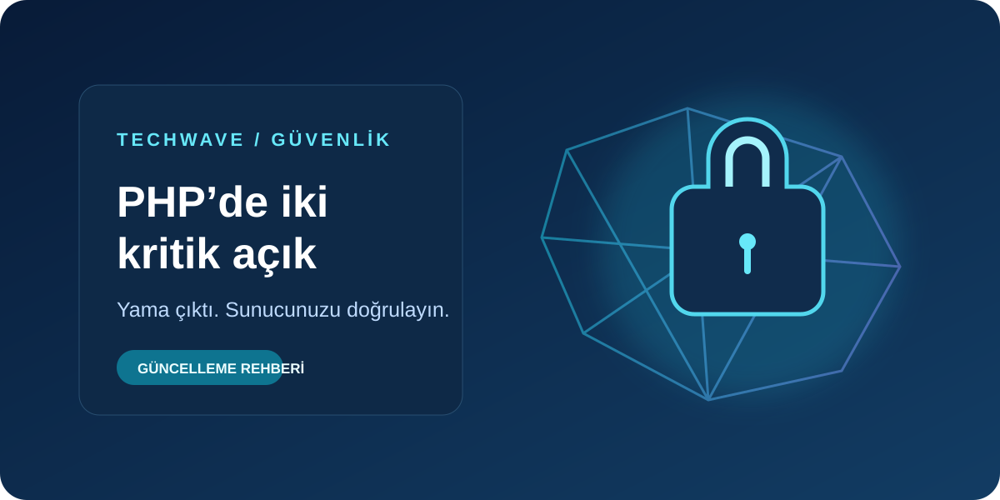

22 EKİM · GÜVENLİK GÜNDEMİ
Siber Güvenlik · 9 dk okuma
PHP’de iki kritik açık: sunucunuzu güncelleyin
PHP’nin yayımladığı yamalar hangi sürümleri kapsıyor? WordPress ve hosting kullanıcıları için kaynaklı kontrol listesi.
Güncelleme rehberini oku